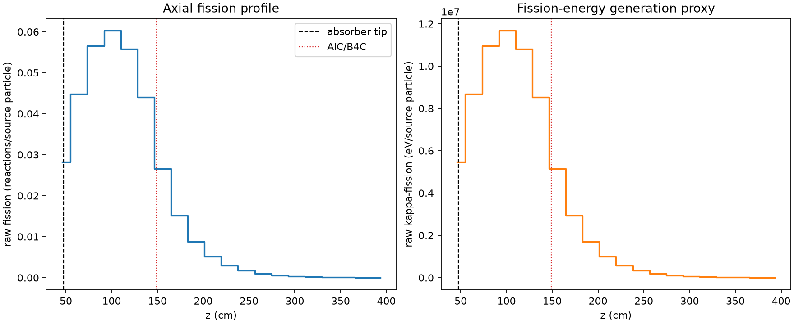
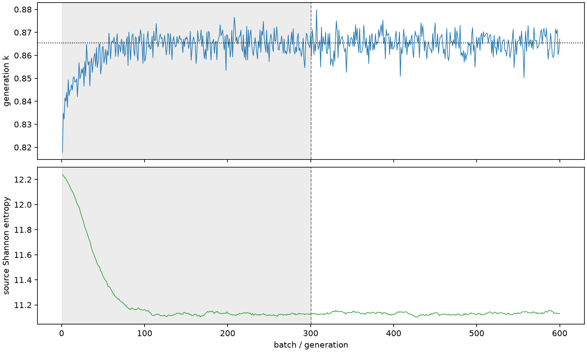

| field | value |
|---|---|
| experiment | V2-ADAPTIVE_01-0004 |
| k | 0.8654143274454316 |
| MC standard error | 0.0001833354520796218 |
| seconds | 957.0710870820039 |
| acceptance | not_assessed |
| convergence | review_required |
Completed is output integrity only; physical and statistical review required. Zero tallies do not prove zero production or zero uncertainty.
| diagnostic | value |
|---|---|
| geometric fuel voxels | 5280 |
| zero fission tally voxels | 0 |
| low signal fuel voxels | 747 |
| low signal fission share | 0.00023788308324268741 |
| low signal kappa share | 0.00023789369278602625 |
| important fission share | 0.9500599418605027 |
| previous filter included | 4533 |
| duration estimate s | 1562.5173488400023 |
| actual minus estimate s | -605.4462617579984 |
| fission relative MC error | statistics |
|---|---|
| all_geometric_fuel | {"voxels": 5280, "positive_mean_voxels": 5280, "zero_mean_voxels": 0, "undefined_relative_error_voxels": 0, "median": 0.026235659148649552, "p95": 0.3583521468986691, "maximum": 0.7255390504021296} |
| low_signal | {"voxels": 747, "positive_mean_voxels": 747, "zero_mean_voxels": 0, "undefined_relative_error_voxels": 0, "median": 0.302033078615413, "p95": 0.5576504524482174, "maximum": 0.7255390504021296} |
| important_95pct | {"voxels": 2195, "positive_mean_voxels": 2195, "zero_mean_voxels": 0, "undefined_relative_error_voxels": 0, "median": 0.007989892415595046, "p95": 0.014404419705822446, "maximum": 0.019852633728496813} |
| outside_previous_filter | {"voxels": 747, "positive_mean_voxels": 747, "zero_mean_voxels": 0, "undefined_relative_error_voxels": 0, "median": 0.302033078615413, "p95": 0.5576504524482174, "maximum": 0.7255390504021296} |
| kappa_fission relative MC error | statistics |
|---|---|
| all_geometric_fuel | {"voxels": 5280, "positive_mean_voxels": 5280, "zero_mean_voxels": 0, "undefined_relative_error_voxels": 0, "median": 0.026193395525240862, "p95": 0.35793710930598677, "maximum": 0.7237369133722489} |
| low_signal | {"voxels": 747, "positive_mean_voxels": 747, "zero_mean_voxels": 0, "undefined_relative_error_voxels": 0, "median": 0.3015776868114347, "p95": 0.5558700904739595, "maximum": 0.7237369133722489} |
| important_95pct | {"voxels": 2195, "positive_mean_voxels": 2195, "zero_mean_voxels": 0, "undefined_relative_error_voxels": 0, "median": 0.007976653562701264, "p95": 0.014376823189389522, "maximum": 0.01981992836151544} |
| outside_previous_filter | {"voxels": 747, "positive_mean_voxels": 747, "zero_mean_voxels": 0, "undefined_relative_error_voxels": 0, "median": 0.3015776868114347, "p95": 0.5558700904739595, "maximum": 0.7237369133722489} |
| axial bin | fission share | kappa-fission share |
|---|---|---|
| 1 | 0.08012484807492273 | 0.0801172964469482 |
| 2 | 0.12728855431571545 | 0.1272878115070792 |
| 3 | 0.16044416954236929 | 0.16044259121206017 |
| 4 | 0.1710236361154976 | 0.17102204894061482 |
| 5 | 0.15833877976870034 | 0.15833734144187775 |
| 6 | 0.12491820636882765 | 0.12491722846791987 |
| 7 | 0.07551559444841388 | 0.07552019384217697 |
| 8 | 0.043045751239698844 | 0.04304959616860499 |
| 9 | 0.024976517137531858 | 0.02497898290302129 |
| 10 | 0.014599156213269624 | 0.01460045934534093 |
| 11 | 0.008458160383475914 | 0.008458935302790965 |
| 12 | 0.004874627622015935 | 0.004874985967105006 |
| 13 | 0.002822055862434259 | 0.0028222082696956747 |
| 14 | 0.0016074471834178904 | 0.0016076385332328105 |
| 15 | 0.0009262150691563384 | 0.0009262997558525036 |
| 16 | 0.0005053635358582397 | 0.0005054194632377351 |
| 17 | 0.0002766629881312716 | 0.0002766914154995664 |
| 18 | 0.00015099218861886496 | 0.00015100108688753772 |
| 19 | 7.886959040565463e-05 | 7.887196321438778e-05 |
| 20 | 2.439235153856734e-05 | 2.4397966839765086e-05 |
Histories include the inactive-to-active transition at batch 300. kappa-fission approximates fission energy production, not total heat deposition.

